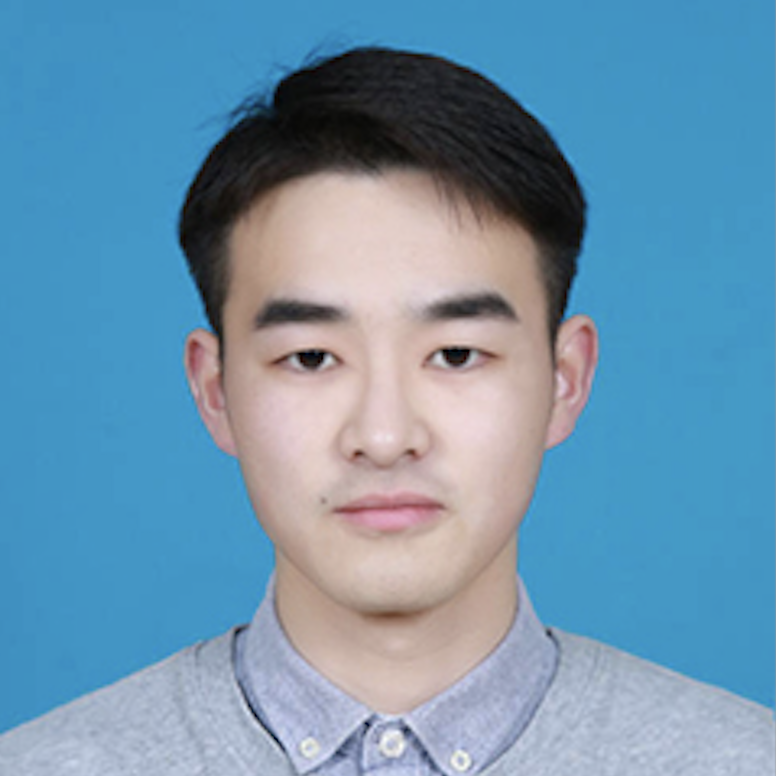

王 梓 Zi Wang
ziwang1121🌀foxmail.com
ziwang🌀ahmu.edu.cn
ziwang1121🌀foxmail.com
ziwang🌀ahmu.edu.cn
王梓于2024年获得安徽大学计算机科学与技术专业工学博士学位。 现就职于安徽医科大学生物医学工程学院，主要从事多模态学习、计算机视觉、医学图像处理等方面的研究。
Zi Wang received his D.Eng degrees in Computer Science and Technology from Anhui University in 2024. He current works at the School of Biomedical Engineering at Anhui Medical University. He is primarily engaged in research on Multi-modal Learning, Computer Vision, Medical Image Processing.